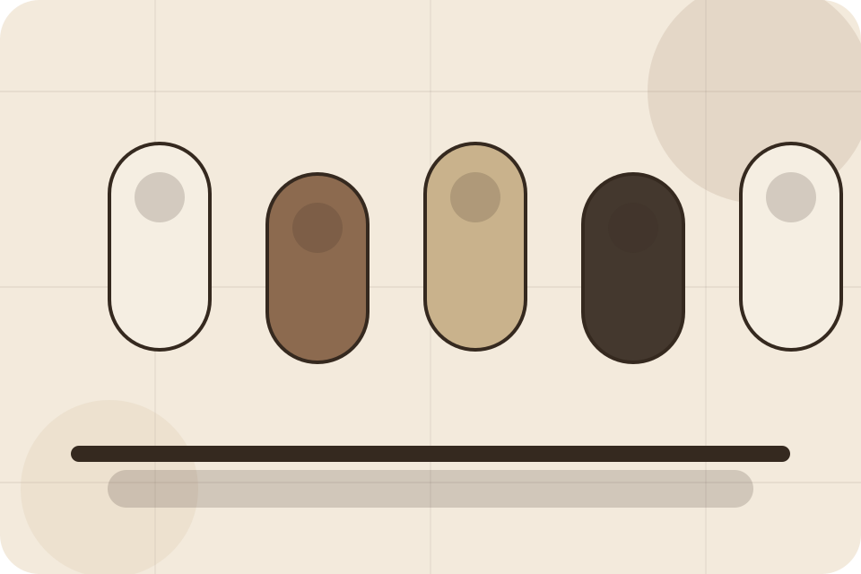
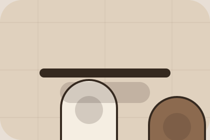

Routine / 01
Routine by Skin
Routine shaped for beauty, cosmetics & aesthetic products decisions.
Routine opens as a clear beauty decision hub: what Skin offers, who it helps, why it matters, and which route to take first.
The first screen combines positioning, proof, primary action, and fast internal navigation, so people can act immediately or compare the rest of the routine route with context.
Browse quicklyCompare clearlyAsk availability
Muted product education hero
Build a routine
Select the closest route and Skin keeps the next step, proof, and follow-up expectation aligned with self-care confidence.

Routine / 02
Finder
Finder adds commerce context to the routine route, using the apothecary routine journal structure to support self-care confidence before visitors choose a next step.
Skin uses ingredient education cards and focused copy to make the decision easier to scan, aligning the section with self-care confidence rather than filling space.
Explore RoutineContext
Finder gives the page a specific angle instead of repeating the navigation label.
Judgment
The ingredient education cards show what to compare, what to avoid, and what matters most for beauty, cosmetics & aesthetic products visitors.
Direction
The final cue points to a useful internal route so the section keeps the journey moving.
Routine / 03
Morning
Morning adds commerce context to the routine route, using the apothecary routine journal structure to support self-care confidence before visitors choose a next step.
Skin uses ingredient education cards and focused copy to make the decision easier to scan, aligning the section with self-care confidence rather than filling space.
Explore Routine- 01
Context
Morning gives the page a specific angle instead of repeating the navigation label.
- 02
Judgment
The ingredient education cards show what to compare, what to avoid, and what matters most for beauty, cosmetics & aesthetic products visitors.
- 03
Direction
The final cue points to a useful internal route so the section keeps the journey moving.
Routine / 04
Night
Night adds commerce context to the routine route, using the apothecary routine journal structure to support self-care confidence before visitors choose a next step.
Skin uses ingredient education cards and focused copy to make the decision easier to scan, aligning the section with self-care confidence rather than filling space.
Explore RoutineSkin structures night around context, judgment, and a clear next route so visitors can compare the block quickly before they build a routine.
Build RoutineRoutine / 07
Match
Match adds commerce context to the routine route, using the apothecary routine journal structure to support self-care confidence before visitors choose a next step.
Skin uses ingredient education cards and focused copy to make the decision easier to scan, aligning the section with self-care confidence rather than filling space.
Explore RoutineMatch gives the page a specific angle instead of repeating the navigation label.
The ingredient education cards show what to compare, what to avoid, and what matters most for beauty, cosmetics & aesthetic products visitors.
The final cue points to a useful internal route so the section keeps the journey moving.
Routine / 08
Tips
Tips adds commerce context to the routine route, using the apothecary routine journal structure to support self-care confidence before visitors choose a next step.
Skin uses ingredient education cards and focused copy to make the decision easier to scan, aligning the section with self-care confidence rather than filling space.
Explore Routine- 01
Context
Tips gives the page a specific angle instead of repeating the navigation label.
- 02
Judgment
The ingredient education cards show what to compare, what to avoid, and what matters most for beauty, cosmetics & aesthetic products visitors.
- 03
Direction
The final cue points to a useful internal route so the section keeps the journey moving.
Routine / 09
Consistency
Consistency adds commerce context to the routine route, using the apothecary routine journal structure to support self-care confidence before visitors choose a next step.
Skin uses ingredient education cards and focused copy to make the decision easier to scan, aligning the section with self-care confidence rather than filling space.
Explore RoutineSkin structures consistency around context, judgment, and a clear next route so visitors can compare the block quickly before they build a routine.
Build RoutineRoutine / 10
Build Routine
Skin closes the routine route with a clear action, a quick reminder of the value, and a low-friction way to build a routine.
Visitors who are ready can use the primary action. Visitors who are still comparing can scan the section links, proof, and support routes before they build a routine.
Build RoutineThe final block keeps the choice simple: act now, compare one more proof route, or send enough detail for a focused response.
Build Routineself-care confidence
Build Routine
A routine site with restrained product education, ingredient notes, tactile cards, and consultation routes. Routine ends with a direct path to build a routine, plus enough context for visitors who still need to compare.

Build RoutineNotes
Ingredient suitability varies by person; patch testing and professional advice may be needed for sensitive users.